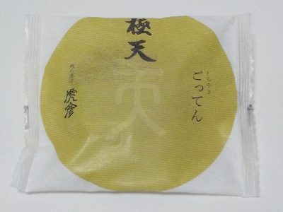

虎彦の極天。
2024/10/07

どら焼きの頂天を極めたいってことで「極天」って商品名だそうです。あと、極天様という神様への感謝もあるそうです。
思いが強そうなどら焼きです。
甘さが控えめなどら焼きだと思いました。それぞれの素材の味を生かしたかったのかな。 食材に感謝しながらどら焼きを食べました。
宮崎県延岡市幸町1-20
2024/10/07

どら焼きの頂天を極めたいってことで「極天」って商品名だそうです。あと、極天様という神様への感謝もあるそうです。
思いが強そうなどら焼きです。
甘さが控えめなどら焼きだと思いました。それぞれの素材の味を生かしたかったのかな。 食材に感謝しながらどら焼きを食べました。